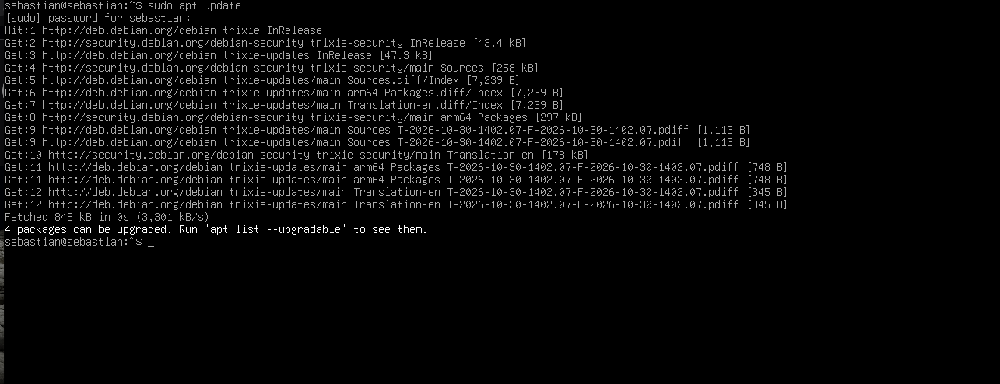
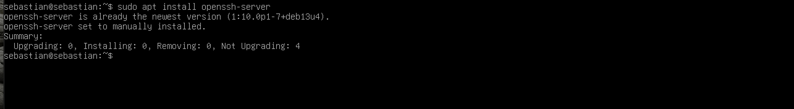
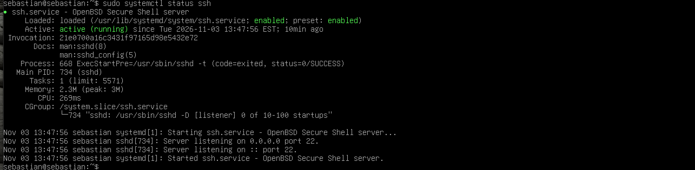
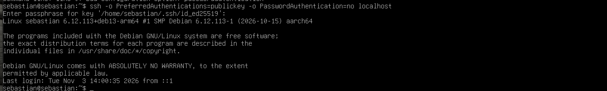
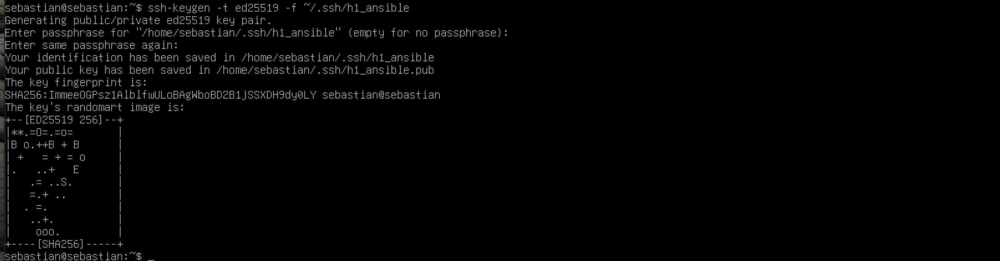
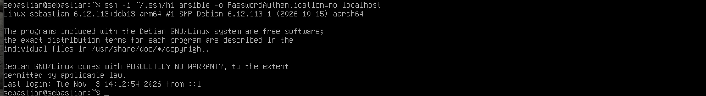
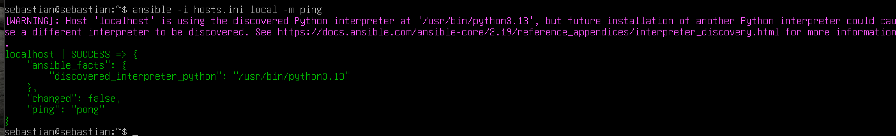
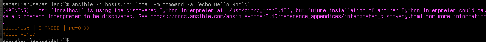

ssh-keygen-komentoa ja julkisen avaimen siirtämiseen ssh-copy-id-komentoa.Oma huomio: Aihe oli minulle hyödyllinen, koska pääsin kokeilemaan samoja komentoja käytännössä tässä tehtävässä. Huomasin, että avainkirjautuminen helpottaa kirjautumista huomattavasti. Erityisesti siitä on hyötyä silloin, kun yhteyksiä käytetään automaation kanssa.
ping-moduulilla ja miten palvelimella voidaan suorittaa komentoja.Oma huomio: En ollut aikaisemmin käyttänyt Ansiblea, joten artikkeli auttoi ymmärtämään sen perusidean. Tehtävää tehdessäni kokeilin yhteyden testaamista ja Hello World -tekstin tulostamista. Oli mukava huomata, että sain komennot toimimaan ilman, että minun tarvitsi kirjautua palvelimelle erikseen tekemään niitä.
Asensin Debian 13 -käyttöjärjestelmän paikallisesti VirtualBox-virtuaalikoneeseen jo H0-tehtävän yhteydessä. Käytin samaa virtuaalikonetta myös tässä tehtävässä.
Aiempi asennusraportti: H0-raportti
Aloitin päivittämällä Debianin pakettiluettelot komennolla:
sudo apt update

Tämän jälkeen tarkistin ja asensin SSH-palvelimen komennolla:
sudo apt install openssh-server
SSH-palvelin oli jo valmiiksi asennettuna järjestelmään, joten erillistä asennusta ei tarvittu.

Tarkistin SSH-palvelun toiminnan komennolla:
sudo systemctl status ssh

Tulosteesta näkyi, että palvelu oli aktiivinen ja käynnissä (active (running)). Tämän jälkeen testasin SSH-yhteyttä omaan koneeseen:
ssh localhost
Kirjautuminen onnistui, joten SSH-yhteys toimi oikein.
Seuraavaksi otin käyttöön uuden SSH-avainparin, jotta kirjautuminen onnistuisi ilman käyttäjän salasanan kysymistä.
Loin uuden Ed25519-avainparin komennolla:
ssh-keygen -t ed25519 -f ~/.ssh/h1_ansible
Julkinen avain tallentui tiedostoon h1_ansible.pub ja yksityinen avain tiedostoon h1_ansible.

Kopioin julkisen avaimen palvelimelle komennolla:
ssh-copy-id -i ~/.ssh/h1_ansible.pub localhost

Komento ilmoitti, että yksi avain lisättiin onnistuneesti.
Testasin tämän jälkeen kirjautumista uudella avaimella:
ssh -i ~/.ssh/h1_ansible -o PasswordAuthentication=no localhost
Kirjautuminen onnistui ilman käyttäjän salasanan tai avaimen passphrasen kysymistä. SSH-avainkirjautuminen toimi siis odotetusti.

Viimeisessä kohdassa asensin Ansiblen Debianiin komennolla:
sudo apt install ansible
Tarkistin asennuksen onnistumisen:
ansible --version
Asennettu Ansible-versio oli 2.19.11.
Seuraavaksi loin hosts.ini-tiedoston ja määritin siihen paikallisen koneen sekä käytettävän SSH-avaimen:
[local] localhost ansible_connection=ssh ansible_user=sebastian ansible_ssh_private_key_file=/home/sebastian/.ssh/h1_ansible
Testasin Ansible-yhteyden komennolla:
ansible -i hosts.ini local -m ping
Testi onnistui ja Ansible palautti vastauksen "pong". Tämä osoitti, että Ansible pystyi muodostamaan SSH-yhteyden koneeseen.

Lopuksi suoritin Hello World -testin:
ansible -i hosts.ini local -m command -a "echo Hello World"
Komento onnistui ja tulosteena oli:
localhost | CHANGED | rc=0 >> Hello World

Näin sain testattua Ansiblen toimintaa SSH-yhteyden kautta onnistuneesti.